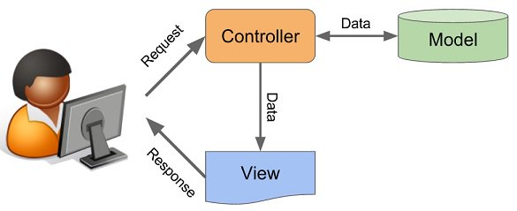

Crisis Containment Service - Raport Scholarly
1.
Abstract
O platformă Web care permite gestionarea de urgență a unor situații extreme (e. cutremure, incendii, inundații etc.) de către autorități sau organizații și, totodată, permite administrarea unui sistem pe baza căruia pot fi raportate diverse dispariții ale unor persoane.
2.
Introducere

Pentru a fi în siguranță și cât mai conștientă de evenimentele care au loc în jurul nostru, populația are nevoie de un sistem integrat de avertizare și alarmare, valabil pe toate dispozitivele, care să permită, în cel mai scurt timp posibil, informarea cu toate detaliile necesare cu privire la fenomenul extrem petrecut sau la victimele date dispărute de către apropiați.
Identificând această nevoie, putem soluția necesitatea prin construirea unei aplicații de alertare. Crisis Containment Service se dorește a reprezenta o aplicație Web care permite autorităților sau organizațiilor specializate să gestioneze situații de urgență, precum cutremure, incendii, inundații, dispariții ale persoanelor etc.
Aplicația va furniza atât informații de inters în ceea ce privește evenimentele, persoanele sau zonele afectate, cât și metode de prim ajutor sau ce poți face în caz de un dezastru. De asemenea, se vor primi notificări în caz că o persoană este afectată direct sau dacă se află în vecinătate.
Cu toate acestea, sistemul va furniza informații de interes pentru găsirea unei persoane dispărute sau legate de orice adăposturi și căi de salvare.
3.
Tehnologii folosite
3.1
HTML CSS JavaScript
Focusul principal ce stabilește identitatea aplicației noastre este redat cu ajutorul HTML,CSS și JavaScript. Pe parcursul dezvoltării acesteia, pe partea de Front-end, s-a utilizat HTML pentru crearea scheletului, care ulterior a fost stilizat cu CSS și în care s-au implementat diferite funcționalități cu JavaScript.
3.2
NodeJS
Partea de back-end a fost implementată cu ajutorul limbajului open-source NodeJS, întrucât acesta este destinat dezvoltării de aplicații Web rapide și scalabile. Platformă ale cărei rădăcini stau în JavaScript, folosește un model bazat pe evenimente în care operațiile de intrare/ieșire sunt gestionate asincron, permițând astfel utilizarea sa în aplicații de timp real(ex.Uber, Microsoft, eBay) și care rulează pe dispozitive distribuite, fără a fi afectată performanța.
3.3
MongoDB
MongoDB este o bază de date NoSQL open-source orientată pe documente. Diferența principală constă în faptul că stocarea datelor nu se face folosind tabele precum într-o bază de date relațională, MongoDB stochează datele sub formă de documente JSON cu scheme dinamice.
3.4
GitHub
Pentru urcarea surselor, coordonarea și munca în echipă am folosit serviciul GitHub. Acesta permite păstrarea unei copii a proiectului online și vizualizarea tuturor fișierelor și a modificărilor aduse acestora.
3.5
Server
Luând în considerare că tehnologiile amintite până acum au ca fundament JavaScript, construirea server-ului s-a bazat pe
4.
Arhitectura proiectului
4.1
Diagramă
4.2
Context
Atunci când utilizatorul accesează aplicația web CriC, acesta va interacționa, în prima fază,
cu Map Page-ul, în cadrul căreia este integrată harta dezvoltată de cei de la Google - Google
Crisis Map. În cadrul harții, utilizatorul poate vedea evenimentele petrecute în toata lumea.
Dacă acesta dorește să acceseze oricare altă pagină, atunci avem una dintre urmatoarele situații:
- Utilizatorul nu este logat - acesta va fi redirecționat către pagina de Login.
-
Dacă are deja cont în baza de date, atunci introduce datele (email și parolă). În
funcție de corectitudinea datelor, acesta poate fi redirecționat către pagina principală (în
caz pozitiv) sau întors în pagina de Login (în caz negativ).
-
Dacă nu are un cont, atunci va accesa pagina de Sign Up, unde va completa un formular.
Dacă datele introduse nu sunt găsite în baza de date și sunt valide, atunci acesta va fi redirecționat
către pagina principală (în Map Page). În caz contrar, utilizatorul va primi un mesaj și va rămâne în pagina
de Sign Up.
-
Utilizatorul este logat - acesta poate accesa orice pagină din meniul aplicației.
-
Dacă utilizatorul alege accesarea paginii Events Page, atunci datele acestuia vor
fi verificate pentru a se decide dacă:
-
contul aparține unui admin - atunci cel din urma menționat poate edita lista
evenimentelor, detaliile acestora și comentariile din rubrica aferentă;
-
contul nu aparține unui admin - atunci acesta poate vedea informațiile menționate, având totodata posibilitatea de a le filtra, prin bara de search, după numele acestora.
-
Dacă utilizatorul dorește să adauge un eveniment, completează câmpurile formularului.
În momentul trimiterii acestora către baza de date, se verifică daca nu coincide cu o altă tuplă
deja înregistrată. În eventualitatea în care acestea coincid, utilizatorul este redirecționat
către pagina curentă - Add Event. În caz contrar, acesta va fi redirecționat către o pagina ce
afișeaza o bară de loading și un mesaj de succes, ulterior fiind redirecționat înapoi către pagina Add Event.
-
În eventualitatea în care utilizatorul dorește accesarea paginii Guide, indiferent de natura sa,
poate vizualiza mai multe detalii despre aplicație în secțiunea About și, de asemenea, se poate informa
cu privire la ultimele dezastre petrecute.
-
În situația accesării paginii Casualties, utilizatorul poate alege una dintre urmatoarele:
- Giving information about somebody:
-
dacă datele contului conectat coincid cu cele ale unui admin, atunci utilizatorul curent poate edita informațiile din ce au fost introduse (Nume, prenume, poza) sau comentariile;
-
dacă datele contului curent aparțin unui simplu utilizator, atunci acesta poate adăuga informațiile pe care le deține despre o persoană dispărută sau poate comenta în secțiunea aferentă.
-
Finding somebody:
-
permite oricarui tip de utilizator, cu ajutorul Google Person Finder, să caute o persoană dispărută, prin intermediul următoarelor date: nume, prenume, condiția de viață, naționalitate, locul și tipul de eveniment în care a fost implicat.
4.3
Diagramă bază de date
5.
Surse date externe
5.1
Schimbarea datelor utilizatorului
După completarea datelor formularului de setări cont, este efectuat un apel Ajax de tip post către server și asteaptă un răspuns. Dacă răspunsul este “succes” atunci va notifica user-ul că setările s-au actualizat cu succes, în caz de “eroare”, user-ul va fi notificat că a intervenit o eroare și trebuie să completeze din nou cu date valide.
Serverul, după primirea unui JSON cu datele din formularul de setări, modifică în tabela Users cu datele primite, dacă operația s-a efectuat cu succes și trimite mesajul “succes” căre client, altfel, în caz de eroare, trimite mesajul “eroare”.
5.2
Logare
După completarea email-ului și parolei din formularul de logare, este efectuat un apel Ajax de tip post către server și asteaptă un răspuns. Dacă răspunsul este “succes” atunci va redirecta user-ul către pagina principală, în caz de “eroare”, user-ul va fi notificat că datele nu îi sunt valide și să introducă alte date valide.
Serverul, dupa primirea unui JSON cu datele din formularul de logare, verifică dacă există înregistrarea cu email și parolă respectivă în tabele Users din baza de date. Dacă există, se trimite raspunsul “succes către client” și este generat un token de sesiune ce este introdus în tabela Logged din baza de date asociat user-ului curent.
5.3
Utilizarea de API-uri
Platforma va implementa și unele servicii de la Google precum Google Crisis Map, Fusion Tables ,Geolocation API și Google Person Finder.
Pentru implementarea acestora se va folosi arhitectura de aplicatie RESTful (Representational State Transfer).Fiecare request trimis de către platofrmă la una din API-urile de mai sus o să fie identificat printr-un API key.
Aceste servicii web au fost create pentru a afla în mod rapid despre anumite dezastre naturale, numarul de victime și dacă anumite persoane au fost implicate.
Pe lângă aceste lucruri, persoanele din zona unui dezastru pot fi anunțate rapid despre evenimente. Google Crisis Map este principalul din cele enumerate mai sus.
Acesta, alături de Person Finder au să utilizeze intens Google Maps pentru o mai bună identificare a locației unei anumite persoane spre exemplu.
6.
Model-View-Controller (MVC)

/(root)
-
Controllers - putem controla accesul la aplicația noastră, putând diversifica conținutul de o formă dinamică și statică, în același timp.
-
MainController.js
-
PostsController.js
-
EditController.js
-
Models - responsabile de manipularea operațiunilor logice și de utilizare de informație pentru a rezulta de o formă ușor de înțeles.
-
UsersModel.js
-
PostsModel.js
-
EditModel.js
-
FindingModel.js
-
NotificationsModel.js
-
View - corespunde reprezentării grafice, sau mai bine zis, exprimării ultimei forme a datelor: interfața grafică ce interacționează cu utilizatorul final.
-
home.html
-
Casualities.html
-
search.html
-
about.html
-
contact.html
7.
Use Cases
7.1
User person
-
utilizatori: este reprezentat de orice utilizator normal
-
administrator : este reprezentat de autorități
7.2
User stories
-
utilizator:
-
se poate loga pe aplicație (în cazul în care nu are cont, se poate înregistra și după loga)
-
după ce se loghează, poate accesa Events Page, Add Event Page sau Casualities Page
-
în cazul în care accesează Events Page unde poate vizualiza lista evenimentelor (Events List) cu toate detaliile despre acestea, poate adăuga comentarii la evenimente sau poate căuta evenimente cu Search events.
-
în cazul în care accesează Add Event Page, acesta completează un formular în care poate adăuga un eveniment care are loc sau s-a petrecut la locația la care acesta se află sau în apropierea sa (în cazul în care trimiterea formularului a eșuat, este afișată o eroare).
-
în cazul în care accesează Casualities Page acesta poate completa un mic formular prin care oferă informații despre o persoană dată dispărută (Finding somebody) sau poate da dispărută o persoană oferind informații despre aceasta (nume, prenume, descriere despre locul unde a fost văzută ultima dată și o fotografie cu aceasta atașată).
-
administrator:
-
are acces la toate acțiunile pe care le are și un utilizator normal
-
în plus - când accesează Events Page acesta are acces la editarea evenimentelor postate de alți utilizatori (detalii, comentarii)
-
în plus - când accesează Casualities Page acesta are acces la editarea informațiilor despre persoanele date dispărute (nume, prenume,
imagine și detalii despre când și unde a fost văzută ultima dată).
-
Scenariu:
-
un utilizator dorește să adauge un eveniment
Descriere:
-
un utilizator accesează aplicația, este redirecționat către Map Page, apasă pe butonul de Add Event, în cazul în care nu este logat, este trimis către pagina de login,
unde se poate loga sau își poate creea un cont apăsând pe butonul Register, astfel fiind redirecționat către alt formular pentru a își creea un cont
-
după crearea contului este redirecționat către pagina de logare. Fiind logat, este trimis pe pagina principală (Map Page) unde ca să adauge evenimentul, accesează formularul de adăugare din Add Event, pe care îl completează.
-
Scenariu:
-
un admin logat dorește să modifice datele despre un eveniment adăugat
Descriere:
-
un admin logat accesează pagina Events List pentru a putea edita un eveniment adăugat recent. Apasă pe butonul edit din dreptul unui eveniment unde modifică datele introduse de către utilizator
-
datele sunt reactualizate atât pe pagină cât și în baza de date. Adminul după este redirecționat din nou pe pagina Events List.
8.
Delegare de task-uri
-
Tizu Bianca
-
Pin-uri pe hartă și corelare cu Event List
-
Gestionarea persoanelor din Person Finder - operații de tip CRUD;
-
Integrarea aplicației cu Geolocation API astfel încât locația să fie preluată cu ajutorul GPD-ului dispozitivului;
-
Integrarea aplicației cu Google Crisis Map astfel încât, atunci când o persoană nouă este introdusă în baza de date, aceasta să fie marcată cu ajutorul unui PIN pe hartă.
Mihăilă Bogdan
-
Creare bază de date Person Finder
Mîndrișoru Tudor
-
Adăugare pin pe hartă din formular
-
Corelare cu Event List a formularului
Raicu Andrei-Eduard
-
Sistem de notificare cu privire la incidente
9. Resurse
-
Bibliografie
-
Sursă imagini